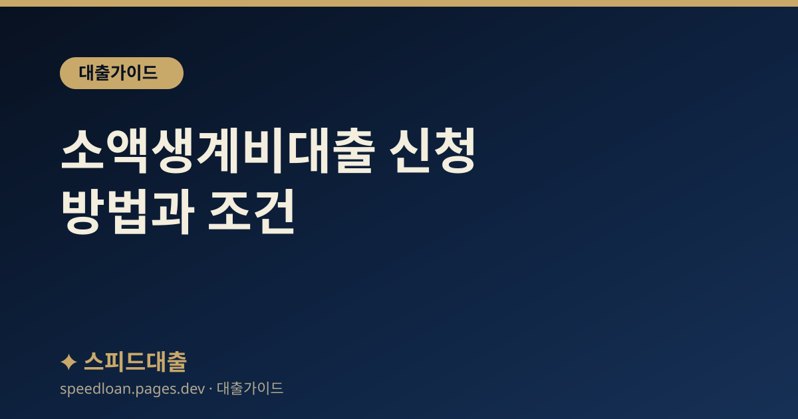

소액생계비대출 신청 방법과 조건
긴급 생계비가 필요할 때 검토할 수 있는 소액생계비대출의 대상과 한도, 신청 방법과 주의점을 정리했습니다.

소액생계비대출이란
소액생계비대출은 제도권 금융 이용이 어려운 취약계층이 급한 생계비를 불법 사금융에 의존하지 않도록 소액을 지원하는 정책 서민금융 상품입니다. 금액이 크지 않은 대신 문턱이 낮아, 당장 소액이 급할 때 검토할 수 있습니다.
높은 금리의 대부업이나 불법 사금융에 손대기 전에 먼저 확인해 볼 만한 제도이며, 대표적인 정책 서민금융 상품 중 하나로 서민금융진흥원이 운영합니다.
큰 금액을 빌리는 상품이 아니라, 당장의 생계 공백을 메우고 급전 때문에 불법 사금융에 빠지는 것을 막는 데 목적이 있습니다. 그래서 대출 자체보다 이후의 상환과 자립을 함께 돕는 방향으로 운영되는 경우가 많습니다.
대상과 한도
- 대상: 소득·신용 여건상 제도권 이용이 어려운 취약계층이 주 대상입니다.
- 한도: 소액으로 시작해 성실 상환 시 추가 이용이 가능한 방식이 일반적입니다.
- 연체 이력이 있어도 상담이 가능한 경우가 있어, 급전이 필요할 때 대안이 될 수 있습니다.
구체적인 자격·한도·금리는 수시로 조정되므로 서민금융진흥원(1397)에서 최신 기준을 확인해야 합니다.
신청 방법과 절차
- 서민금융진흥원(1397, kinfa.or.kr) 또는 서민금융통합지원센터를 통해 상담·신청
- 예약 후 방문 상담으로 진행되는 경우가 많으므로 일정을 확인
- 신분·소득·생계 상황을 확인할 수 있는 서류 준비
정부 지원 대출을 대신 받아 준다며 수수료를 요구하는 곳은 사기이니 반드시 공식 채널만 이용하세요.
소액생계비대출과 다른 제도의 차이
소액생계비대출은 아주 급한 소액을 빠르게 지원하는 데 초점이 있습니다. 필요한 금액이나 상황에 따라 다른 제도가 더 맞을 수 있으니 함께 비교해 보세요.
- 더 큰 금액이 필요하면: 햇살론 등 다른 정책 서민금융 상품의 자격을 확인해 보세요.
- 빚이 감당하기 어렵다면: 대출보다 채무조정 제도가 근본 해결책일 수 있습니다.
- 실직·질병 등 위기 상황이면: 긴급복지지원 등 복지 제도(보건복지상담센터 129)도 함께 알아보세요.
이용 시 주의점과 상환
- 소액이라도 상환 계획 없이 반복 이용하면 부담이 됩니다.
- 성실히 상환하면 이후 이용 조건이 개선되고 신용 회복에도 도움이 됩니다.
- 급전 돌려막기로 불법 사금융에 손대는 것은 상황을 더 악화시킵니다.
상환이 어려워지면 방치하지 말고 연체 전에 상담을 받아 조정 방법을 찾는 것이 좋습니다. 무리한 저신용자대출 다중 신청보다 제도권 지원부터 알아보는 것이 안전합니다.
신청 전 알아두면 좋은 점
상담을 예약하기 전에 내 상황을 정리해 두면 상담이 한결 원활합니다. 소득과 지출, 현재 갚고 있는 빚을 대략 적어 가면 상담사가 나에게 맞는 지원을 안내하기 쉽습니다.
- 최근 소득과 월 고정지출을 간단히 정리해 두기
- 현재 연체나 대출이 있다면 대략의 금액과 건수 파악하기
- 신분증 등 기본 서류와 연락 가능한 연락처 준비하기
- 상담은 무료이며, 지원이 어렵더라도 다른 제도를 함께 안내받을 수 있습니다.
급하게 소액이 필요하다는 이유로 조건을 확인하지 않고 아무 대출이나 받으면 오히려 부담이 커질 수 있으니, 공식 상담을 먼저 활용하는 것이 안전합니다.
자주 묻는 질문
연체 중인데도 소액생계비대출을 받을 수 있나요?
연체 이력이 있어도 상담이 가능한 경우가 있습니다. 다만 최종 지원 여부와 조건은 심사에 따라 다르므로 서민금융진흥원 1397에서 확인하세요.
어디서 신청하나요?
서민금융진흥원과 서민금융통합지원센터를 통해 신청·상담할 수 있습니다. 보통 예약 후 상담으로 진행되며 공식 상담은 무료입니다.
소액생계비대출을 받으면 신용점수가 크게 떨어지나요?
정책 서민금융 상품은 취약계층 지원 목적이라 일반 대출과 영향이 다를 수 있습니다. 성실히 상환하면 오히려 신용 회복에 도움이 되는 방향으로 작용할 수 있습니다.
금리는 얼마인가요?
정책 상품 금리는 제도에 따라 조정되므로 특정 수치를 단정하기 어렵습니다. 신청 시점의 공식 안내를 확인하는 것이 정확합니다.
소액생계비대출 말고 다른 방법은 없나요?
채무가 많다면 신용회복위원회(1600-5500) 채무조정을, 실직·질병 등 위기 상황이면 긴급복지지원(보건복지상담센터 129)을 함께 알아볼 수 있습니다. 상황에 따라 대출보다 이런 제도가 더 근본적인 도움이 될 수 있습니다.
공식 참고 기관
본 사이트의 콘텐츠는 아래 공공·공식 기관의 공개 자료를 참고하여 작성하며, 구체적인 조건과 최신 제도는 해당 기관에서 직접 확인하시기 바랍니다.
본 사이트는 대출을 직접 제공하거나 중개하지 않으며, 금융상품 가입을 권유하지 않습니다. 모든 정보는 일반적인 참고용이며, 실제 대출 가능 여부, 한도, 금리, 조건은 금융회사 심사와 개인 신용상태에 따라 달라질 수 있습니다.